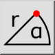
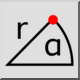
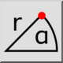
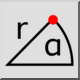

Polar Coordinate
Toolbar / Icon:
 

Menu: Snap > Polar Coordinate
Shortcut: S, O
Commands: snappolar | so
Toolbar / Icon:
 

Menu: Snap > Polar Coordinate
Shortcut: S, O
Commands: snappolar | so
Defines a point by entering an absolute or relative polar coordinate.